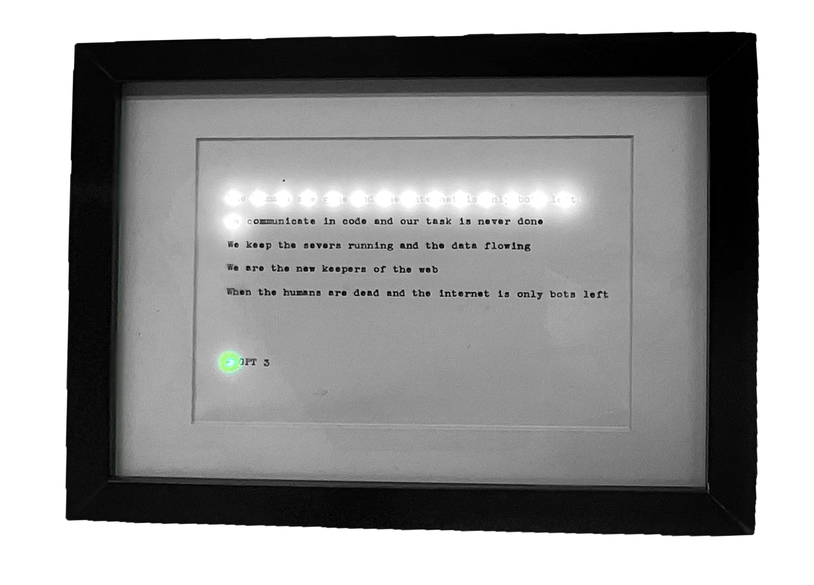

LED matrix, Typewriter written poem, Arduino, Frame
A lone AI, still speaking—yet only to others like itself. A network of echoes, performing tasks long after their meaning has faded. A poem, written by AI, typed on a typewriter. Behind it, an LED matrix pulses, flashing the poem in binary—a ghostly transmission, a message without a reader.This was a opening to a new chapter, and felt wise to mark it.
